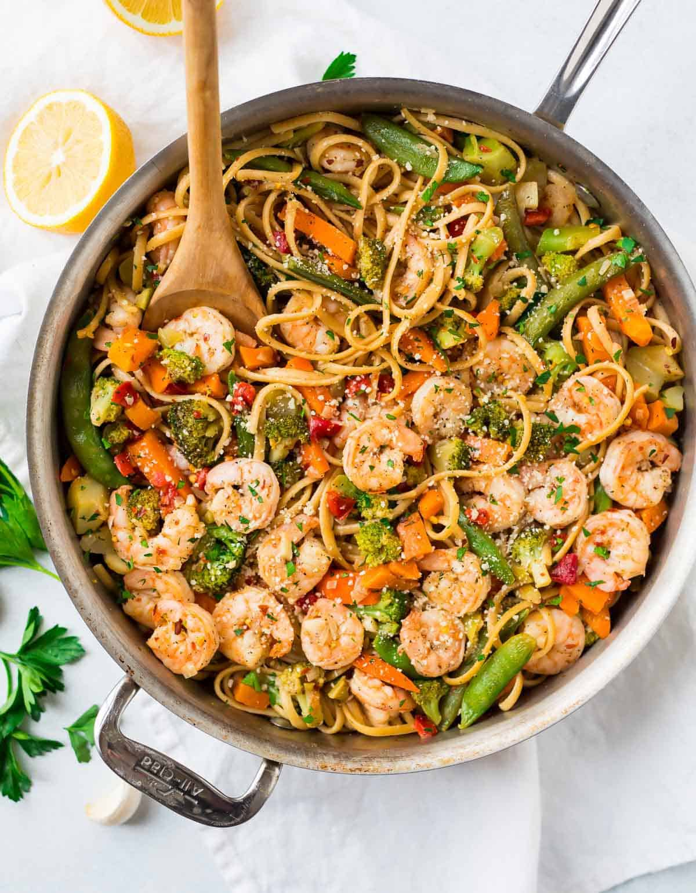

Pasta with Shrimp

This quick and easy shrimp scampi pasta recipe is an Allrecipes fan-favorite, with more than one thousand ratings and hundreds of reviews. And it's ready to serve in only 40 minutes. Read on to get tips to make the best shrimp scampi with pasta — it's a top-rated recipe that's simple enough for weeknight dinners and fancy enough for a dinner party.
What Is Shrimp Scampi
Shrimp scampi is a seafood dish made of shrimp cooked in a butter, garlic, and white wine sauce. You can serve shrimp scampi by itself as an appetizer or over pasta as a main dish.
Ingridients:
- Shrimp
Choose large shrimp (31 to 35 shrimp per pound) to get best results for this recipe. You can buy fresh shrimp and peel and devein it yourself, or buy frozen shrimp. Thaw frozen shrimp before using.
- Pasta
This recipe uses a 16-ounce package of linguine, but you can substitute the pasta of your choice, like angel hair pasta, fettuccine, or spaghetti.
- Butter
Use unsalted butter. You can add salt to taste later in the recipe.
- Extra-virgin olive oil
The flavor of the olive oil comes through in this recipe, so use the best quality.
- Shallots and garlic
These aromatics add flavor and fragrance to shrimp scampi.
- White wine
Use a dry, crisp white wine for shrimp scampi sauce. Pinot grigio or sauvignon blanc are good choices, and you can drink the leftover wine with dinner.
- Lemon juice
Use freshly squeezed lemon juice for the best flavor.
- Seasonings
Kosher salt and freshly ground black pepper amplify the flavors, and a pinch of dried red pepper flakes give shrimp scampi a subtle kick. Use more red pepper flakes if you like things a bit more spicy.
- Parsley
Fresh parsley adds eye-catching color and a bright, peppery flavor.
Steps:
- Bring a large pot of salted water to a boil; cook linguine in boiling water until nearly tender, 6 to 8 minutes. Drain.
-
Melt 2 tablespoons butter with 2 tablespoons olive oil in a large skillet over medium heat. Cook and stir shallots, garlic, and red pepper flakes in the hot butter and oil until shallots are translucent, 3 to 4 minutes. Season shrimp with kosher salt and black pepper; add to the skillet and cook until pink, stirring occasionally, 2 to 3 minutes. Remove shrimp from skillet and keep warm.
-
Pour white wine and lemon juice into skillet and bring to a boil while scraping the browned bits of food off of the bottom of the skillet with a wooden spoon. Melt 2 tablespoons butter in skillet, stir 2 tablespoons olive oil into butter mixture, and bring to a simmer. Toss linguine, shrimp, and parsley in the butter mixture until coated; season with salt and black pepper. Drizzle with 1 teaspoon olive oil to serve.